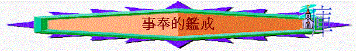

引言：你認為事奉上有什麼事情不能做，要切忌？
從舊約的人物，我們可看到在事奉上我們要鄭重的地方．．．
一.聖經的提醒
1.不可事奉偶像
「不可跪拜那些像，也不可事奉他，因為我耶和華你的神是忌邪的神。恨我的，我必追討他的罪，自父及子，直到三四代；」出20:5
2.不可照外邦風俗事奉神
「你們不可照他們那樣事奉耶和華你們的神。」申12:4
3.不能事奉兩個主
「一個人不能事奉兩個主；不是惡這個，愛那個，就是重這個，輕那個。你們不能又事奉神，又事奉瑪門（瑪門：財利的意思）。」太6:24
4.不可懶惰服事主
「殷勤不可懶惰。要心裡火熱，常常服事主。」羅12:11
5.不可只眼前服事人
「不要只在眼前事奉，像是討人喜歡的，要像基督的僕人，從心裡遵行神的旨意。」弗6:6
「你們作僕人的，要凡事聽從你們肉身的主人，不要只在眼前事奉，像是討人喜歡的，總要存心誠實敬畏主。」西3:22
6.不發怨言服事肢體
「你們要互相款待，不發怨言。」彼前4:9
7.不是勉強事奉神
「務要牧養在你們中間神的群羊，按著神旨意照管他們；不是出於勉強，乃是出於甘心；也不是因為貪財，乃是出於樂意；」彼前5:2
8.不是出於貪財事奉神
「務要牧養在你們中間神的群羊，按著神旨意照管他們；不是出於勉強，乃是出於甘心；也不是因為貪財，乃是出於樂意；」彼前5:2
二.事奉的鑑戒
1.撒但----驕傲自大
「你是那受膏遮掩約櫃的基路伯；我將你安置在神的聖山上；你在發光如火的寶石中間往來。」結28:14
∼撒但原是受造的基路伯，是在神面前侍立的天使
A.有美善的恩賜仍不滿足
「人子啊，你為推羅王作起哀歌，說主耶和華如此說：你無所不備，智慧充足，全然美麗。」結28:12
∼牠也有完備的恩賜：無所不備、智慧充足、善於奏鼓笛，也有如此親近神的經歷，但牠仍不滿足
B.有崇高的地位仍要自高
「人子啊，你對推
「明亮之星，早晨之子啊，你何竟從天墜落？你這攻敗列國的何竟被砍倒在地上？你心裡曾說：我要升到天上；我要高舉我的寶座在神眾星以上；我要坐在聚會的山上，在北方的極處。我要升到高雲之上；我要與至上者同等。」賽14:12-14
∼牠本來是侍立在神面前的天使，有崇高地位，但仍心裡高傲，欲與神同等
C.而事奉的資格終被取消
「因你貿易很多，就被強暴的事充滿，以致犯罪，所以我因你褻瀆聖地，就從神的山驅逐你。遮掩約櫃的基路伯啊，我已將你從發光如火的寶石中除滅。」結28:16
∼魔鬼原來是天使，因牠犯罪被神驅逐到空中，成了魔鬼
2.該隱----行為不好
A.行得不好
「你若行得好，豈不蒙悅納？你若行得不好，罪就伏在門前。他必戀慕你，你卻要制伏他。」創4:7
∼該隱若行得好，他獻的祭必蒙悅納，但神這樣說，可能表明他平時的生活與行為為人不好，所以獻的祭不蒙神悅納
B.嫉恨弟兄
「只是看不中該隱和他的供物。該隱就大大的發怒，變了臉色。」創4:5
C.不聽提醒
「你若行得好，豈不蒙悅納？你若行得不好，罪就伏在門前。他必戀慕你，你卻要制伏他。」創4:7
∼神已提醒該隱罪可伏在他的門前，他仍不警覺，至終殺了亞伯
D.隱藏罪惡
「耶和華對該隱說：「你兄弟亞伯在那裡？」他說：「我不知道！我豈是看守我兄弟的嗎？」」創4:9
3.拿答與亞比戶----從俗不潔
A.獻凡火的錯誤
「亞倫的兒子拿答、亞比戶各拿自己的香爐，盛上火，加上香，在耶和華面前獻上凡火，是耶和華沒有吩咐他們的，就有火從耶和華面前出來，把他們燒滅，他們就死在耶和華面前。」利10:1-2
∼這「火」不是從燔祭上得的，是凡火，他們用凡火燒香，沒有照神吩咐祭祀神，結果有火從神面前出來，把他們燒滅，他們就死在神面前
〜拿答及亞比戶雖有職份，雖有熱心，但不照神吩咐仍不蒙悅納
B.惹神怒的原因
a.有爐火卻是從世俗來
∼不是用壇上的火，是用世俗而來的火
b.有經歷卻不曉得掌握
∼曾見過以色列人用金牛犢錯誤的方式敬拜神，惹神發怒，但今次也用錯誤的敬拜方式事奉神！他們當見到祭壇的供物是用天上的火燒著的，為何不將香爐放在上，讓天上的火燃燒香呢！
c.有訓誨卻不徹底遵從
∼神已吩咐之前的供物是要在神的壇前燒的，為何以香作的供物卻不在壇上被然燒！
d.有擺上卻仍有己意思
∼用自己方式擺上自己的供物！
e.有尊榮卻不敬畏真神
∼剛成了承接祭司之禮，有從神而來的尊榮，卻不懂敬畏神
4.米利暗與亞倫----嫉妒同工
A.至親的毀謗
a.無理的毀謗
「摩西娶了古實女子為妻。米利暗和亞倫因他所娶的古實女子就毀謗他。」民12:1
「摩西甘心和那人同住；那人把他的女兒西坡拉給摩西為妻。」出2:21
〜摩西所娶的古實女子，可能是出埃及記所題的米甸女子，有文獻指出米甸等於古實，因當時律法仍未設立，而且此女子及她的父親也是認識神的，並且向神獻詩，米利暗和亞倫沒理由指責摩西的。
b.嫉妒的主因
「說：「難道耶和華單與摩西說話，不也與我們說話嗎？」這話耶和華聽見了。」民12:2
〜真正毀謗的原因是嫉妒，嫉妒摩西可以為領申袖，可以真接從神得誡命。
c.不怕的表現
「我要與他面對面說話，乃是明說，不用謎語，並且他必見我的形像。你們毀謗我的僕人摩西，為何不懼怕呢？」民12:8
〜因他們不怕攻擊神的僕人
B.摩西的反應
「（摩西為人極其謙和，勝過世上的眾人。）」民12:3
〜摩西極其謙和，不計較，不反駁，不自辯(雖自己有理)
C.真神的回應
「耶和華在雲柱中降臨，站在會幕門口，召亞倫和米利暗，二人就出來了。耶和華說：「你們且聽我的話：你們中間若有先知，我耶和華必在異象中向他顯現，在夢中與他說話。我的僕人摩西不是這樣；他是在我全家盡忠的。我要與他面對面說話，乃是明說，不用謎語，並且他必見我的形像。你們毀謗我的僕人摩西，為何不懼怕呢？」耶和華就向他們二人發怒而去。雲彩從會幕上挪開了，不料，米利暗長了大痲瘋，有雪那樣白。亞倫一看米利暗長了大痲瘋。」12:5-10
a.對被毀謗者
〜神會維護，並且在攻擊者前讚賞摩西的忠心，神是特別與他同在的。
b.對攻擊者
〜神會發怒，令米利暗長大麻瘋
5.巴蘭----偏行己路
「他們有禍了！因為走了該隱的道路，又為利往巴蘭的錯謬裡直奔，並在可拉的背叛中滅亡了。」猶
1:11
「他們離棄正路，就走差了，隨從比珥之子巴蘭的路。巴蘭就是那貪愛不義之工價的先知。」彼後
2:15
「以色列人向亞摩利人所行的一切事，西撥的兒子巴勒都看見了。摩押人因以色列民甚多，就大大懼怕，心內憂急，對米甸的長老說：「現在這眾人要把我們四圍所有的一概餂盡，就如牛餂盡田間的草一般。」那時西撥的兒子巴勒作摩押王。他差遣使者往大河邊的毗奪去，到比珥的兒子巴蘭本鄉那裡，召巴蘭來，說：「有一宗民從埃及出來，遮滿地面，與我對居。這民比我強盛，現在求你來為我咒詛他們，或者我能得勝，攻打他們，趕出此地。因為我知道，你為誰祝福，誰就得福；你咒詛誰，誰就受咒詛。」民
22:2-6
∼當以色列民走曠野路時，摩押王因懼怕他們，而求先知巴蘭咒詛選民。
A.清楚神旨意------仍再問
「神對巴蘭說：「你不可同他們去，也不可咒詛那民，因為那民是蒙福的。」民
22:12
「巴蘭回答巴勒的臣僕說：「巴勒就是將他滿屋的金銀給我，我行大事小事也不得越過耶和華我神的命。現在我請你們今夜在這裡住宿，等我得知耶和華還要對我說什麼。」當夜，神臨到巴蘭那裡，說：「這些人若來召你，你就起來同他們去，你只要遵行我對你所說的話。」民22:18-20
∼巴蘭很清楚神的旨意是「不可咒詛那民」，命令是十分清楚，但他見到尊榮財物的吸引，仍再求問神，想嘗試扭轉神的心意。
B.清楚行不通------仍再試
「巴蘭對巴勒說：「你在這裡給我築七座壇，為我預備七隻公牛，七隻公羊。」巴勒照巴蘭的話行了。巴勒和巴蘭在每座壇上獻一隻公牛，一隻公羊。巴蘭對巴勒說：「你站在你的燔祭旁邊，我且往前去，或者耶和華來迎見我。他指示我什麼，我必告訴你。」於是巴蘭上一淨光的高處。」民23:1-3
「巴勒對巴蘭說：「你向我做的是什麼事呢？我領你來咒詛我的仇敵，不料，你竟為他們祝福。」
他回答說：「耶和華傳給我的話，我能不謹慎傳說嗎？」民
23:11-12
「巴勒說：「求你同我往別處去，在那裡可以看見他們；你不能全看見，只能看見他們邊界上的人。在那裡要為我咒詛他們。」民
23:13
「巴勒對巴蘭說：「你一點不要咒詛他們，也不要為他們祝福。」巴蘭回答巴勒說：「我豈不是告訴你說『凡耶和華所說的，我必須遵行』嗎？」民
23:25-26
「巴勒對巴蘭說：「來吧，我領你往別處去，或者神喜歡你在那裡為我咒詛他們。」民
23:27
∼當巴蘭嘗試想咒詛選民時，結果不由自主的說出祝福之話，他經歷過行不通仍再試。
C.清楚神不悅------仍想得
「巴蘭見耶和華喜歡賜福與以色列，就不像前兩次去求法術，卻面向曠野。巴蘭舉目，看見以色列人照著支派居住。神的靈就臨到他身上。」民
24:1-2
「巴勒向巴蘭生氣，就拍起手來，對巴蘭說：「我召你來為我咒詛仇敵，不料，你這三次竟為他們祝福。」民
24:10
∼巴蘭是知道神喜歡賜福選民，他明顯知道自己所行的是神不喜悅，但他仍想得巴勒的好處，果今次不照前兩次方法求問，直接要咒詛選結果最後也行不通，咒詛至終化為祝福。
6.以利家----不尊重神
A.以利兩兒子藐視神
a.藐視神的存在
「以利的兩個兒子是惡人，不認識耶和華。」撒上2:12
〜以利兩兒子在神的會幕前服事神，會幕內有神的約櫃，代表神的同在，人當認識祂，敬畏祂，但他們是惡人，藐視神的存在，將神拋在腦後，不認識祂的可畏與實在，公然在會幕行惡
b.藐視神的祭物
「這二祭司待百姓是這樣的規矩：凡有人獻祭，正煮肉的時候，祭司的僕人就來，手拿三齒的叉子，將叉子往罐裡，或鼎裡，或釜裡，或鍋裡一插，插上來的肉，祭司都取了去。凡上到示羅的以色列人，他們都是這樣看待。」撒上2:13-14
「如此，這二少年人的罪在耶和華面前甚重了，因為他們藐視耶和華的祭物（或作：他們使人厭棄給耶和華獻祭）。」撒上2:17
〜祭物是分別為聖獻給神，是屬神的，但他們竟私下取去作肥己之用
c.藐視神的律例
「又在未燒脂油以前，祭司的僕人就來對獻祭的人說：「將肉給祭司，叫他烤吧。他不要煮過的，要生的。」獻祭的人若說：「必須先燒脂油，然後你可以隨意取肉。」僕人就說：「你立時給我，不然我便搶去。」撒上2:15-16
「祭司要在壇上焚燒，作為馨香火祭的食物。脂油都是耶和華的。」利3:16
∼百姓也熟悉律例，知道脂油是屬神的，但他們藐視神的律例，連脂油和肉也要奪去
d.藐視神的聖潔
「以利年甚老邁，聽見他兩個兒子待以色列眾人的事，又聽見他們與會幕門前伺候的婦人苟合，」撒上2:22
〜他們竟然可以與會幕門前伺候的婦女苟合，神是聖潔，人卻在神前行淫亂的事！
e.藐視神的管教
「我兒啊，不可這樣！我聽見你們的風聲不好，你們使耶和華的百姓犯了罪。人若得罪人，有士師審判他；人若得罪耶和華，誰能為他祈求呢？」然而他們還是不聽父親的話，因為耶和華想要殺他們。」撒上2:24-25
〜以利也勸戒他們不可行惡，神會有審判，但他們不聽，不理會神的怒氣與管教。
f.藐視神的賞賜
「有神人來見以利，對他說：「耶和華如此說：『你祖父在埃及法老家作奴僕的時候，我不是向他們顯現嗎？在以色列眾支派中，我不是揀選人作我的祭司，使他燒香，在我壇上獻祭，在我面前穿以弗得，又將以色列人所獻的火祭都賜給你父家嗎？」撒上2:27-28
〜「神人」是神所差遣的人，通常是指先知，他提出神已將榮耀的職份及火祭的肉都給予以利家，但他們雨個兒子仍不滿足，仍不重視此賞賜，仍要用自己的方法強奪百姓獻給神的祭物。
B.以利不尊重神
「我所吩咐獻在我居所的祭物，你們為何踐踏？尊重你的兒子過於尊重我，將我民以色列所獻美好的祭物肥己呢？」撒上2:29
〜以利的問題是尊重兒子多於尊重神，從以下表現見到他的不尊重
a.沒有禁止他們惡行
「我曾告訴他必永遠降罰與他的家，因他知道兒子作孽，自招咒詛，卻不禁止他們。」撒上3:13
〜以利雖有勸戒兒子，但卻沒有運用作為父親、士師、大祭司的職份禁止他們
b.沒有當眾殺死他們
「「人若有頑梗悖逆的兒子，不聽從父母的話，他們雖懲治他，他仍不聽從，父母就要抓住他，將他帶到本地的城門、本城的長老那裡，對長老說：『我們這兒子頑梗悖逆，不聽從我們的話，是貪食好酒的人。』
本城的眾人就要用石頭將他打死。這樣，就把那惡從你們中間除掉，以色列眾人都要聽見害怕。」」申21:18-21
〜他的兒子明顯是頑梗悖逆，並且與婦女苟合，作為領袖的以利，應行神的吩咐，在眾人面前用石頭打死他們，以利卻沒有。
c.沒有停止他們職份
〜兒子行惡，以利應停他們職份，但他竟容許兒子們繼續作祭司，繼續藐視神的祭物
d.沒有鄭重神的警告
〜之後神提出對以利家的審判，但以利沒因此而改變對他兒子的態度，仍然是尊重兒子多於神，沒有禁止他們的惡行。
C.神的折斷
a.其後裔----死在中年
「日子必到，我要折斷你的膀臂和你父家的膀臂，使你家中沒有一個老年人。在神使以色列人享福的時候，你必看見我居所的敗落。在你家中必永遠沒有一個老年人。我必不從我壇前滅盡你家中的人；那未滅的必使你眼目乾癟、心中憂傷。你家中所生的人都必死在中年。」撒上2:31-33
b.其兒子----同一日死
「你的兩個兒子何弗尼、非尼哈所遭遇的事可作你的證據：他們二人必一日同死。」撒上2:34
c.其職份----被人取替
「我要為自己立一個忠心的祭司；他必照我的心意而行。我要為他建立堅固的家；他必永遠行在我的受膏者面前。你家所剩下的人都必來叩拜他，求塊銀子，求個餅，說：求你賜我祭司的職分，好叫我得點餅吃。」撒上2:35-36
「王對祭司亞比亞他說：「你回亞拿突歸自己的田地去吧！你本是該死的，但因你在我父親大衛面前抬過主耶和華的約櫃，又與我父親同受一切苦難，所以我今日不將你殺死。」所羅門就革除亞比亞他，不許他作耶和華的祭司。這樣，便應驗耶和華在示羅論以利家所說的話。」王上2:26-27
「王就立耶何耶大的兒子比拿雅作元帥，代替約押，又使祭司撒督代替亞比亞他。」王上2:35
〜以利家作祭司的職份終被奪去，由忠心的祭司----撒督及其一家取代
7.以色列人----心不專一
A.事奉別神
「我在古時折斷你的軛，解開你的繩索。你說：我必不事奉耶和華；因為你在各高岡上、各青翠樹下屈身行淫（或作：我在古時折斷你的軛，解開你的繩索，你就說：我必不事奉別神。誰知你在各高岡上、各青翠樹下仍屈身行淫）。」耶2:20
B.不能專心
「他們直到如今仍照先前的風俗去行、不專心敬畏耶和華、不全守自己的規矩、典章、也不遵守耶和華吩咐雅各後裔的律法、誡命．雅各、就是從前耶和華起名叫以色列的。」王下17:34
C.不能持久
「約書亞在世和約書亞死後，那些知道耶和華為以色列人所行諸事的長老還在的時候，以色列人事奉耶和華。」書24:31
「及至士師死後，他們就轉去行惡，比他們列祖更甚，去事奉叩拜別神，總不斷絕頑梗的惡行。」士2:19
D.錯誤觀念
「耶和華說：「你們用話頂撞我，你們還說：『我們用什麼話頂撞了你呢？』你們說：『事奉神是徒然的，遵守神所吩咐的，在萬軍之耶和華面前苦苦齋戒，有什麼益處呢？」瑪3:13-14
「那時你們必歸回，將善人和惡人，事奉神的和不事奉神的，分別出來。」瑪3:18
∼他們以為事奉神是徒然，因見惡人不事奉神仍安然，其實神將來會審判惡人，會記念事奉祂的人。
8.以弗所教會----失去初愛
「我知道你的行為、勞碌、忍耐，也知道你不能容忍惡人。你也曾試驗那自稱為使徒卻不是使徒的，看出他們是假的來。你也能忍耐，曾為我的名勞苦，並不乏倦。然而有一件事我要責備你，就是你把起初的愛心離棄了。」啟2:2-4
A.欣賞他們為主勞苦的擺上
∼人為主名勞苦，行忍耐，主是知道，主是欣賞，沒否定的！
B.責備他們失落起初的愛心
a.起初的愛心
∼原來主是知道，記得人起初的愛心，此愛心可能是對主或對人，以弗所教會當初對主的愛心，十分熱烈，為主放低一切，離棄邪術，偶像，主是記得的，另外，他們對眾人的愛心，保羅也欣賞，但時間久了，此熱烈、單純的初愛卻改變了！
b.失落的可怕
〜即使有好生命、行為，仍會失落初愛！
〜失落了切愛，可以不知的！
∼主要他們回想從那�媦Y落初愛，若不回想，可能真不記得，或不自覺何時或有失落過的！
〜失落初愛是罪，主要他們悔改，只有犯罪先用悔改，所以失落初愛，也是罪的！
c.回轉的方法
〜回想：從那�媦Y落，是甚麼原因呢？
〜悔改
〜行起初所行的：原來仍可以像以往一般，重拾起初愛心的表現，昔日如何表現，就要行回起初所行的！
三.個案研討
「志明是少年團契團友，有一天，導師邀請他作事奉，其實那段時間他要應付考試，不打算返教會的，但他不好意思推卻導師的邀請，免為其難應允，而團契在2:30p.m.
開始，他準時2:30 p.m.到達，因天氣很酷熱，他穿了短褲回教會參與事奉，但他回來後，見導師已預備好塲地安排，他自覺沒甚麼工作可以再作，他就安靜參與當日講道聚會，當聚會結束後，因他要趕回家預備考試，他向導師說再見後，就立刻離開教會回家中溫習。」
「麗英有一次應允作團契事奉，但那日她有事不能返教會，到聚會開始時，導師見她仍未到，就打電話給她，她說她有要事，不能回團契，請導師找其他人代她，她下一次再有機會才「補返」。
∼你認為志明、麗英的事奉態度及表現正確嗎？有甚麼不妥？你若是他們，你又有甚麼表現？